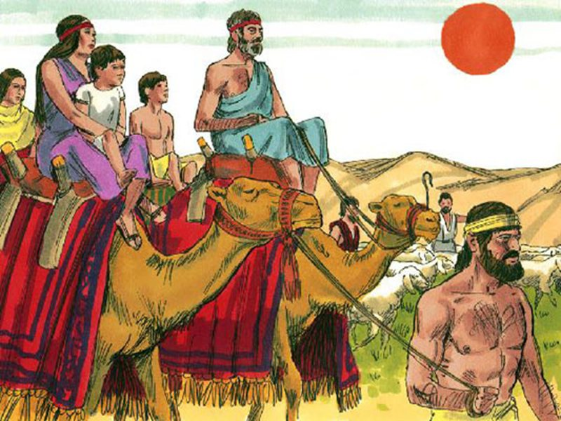
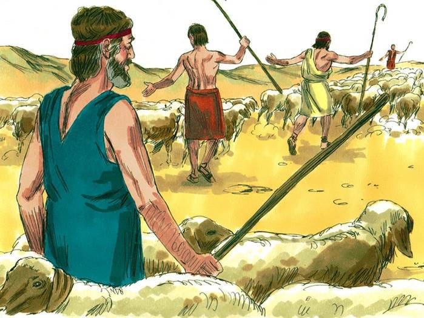
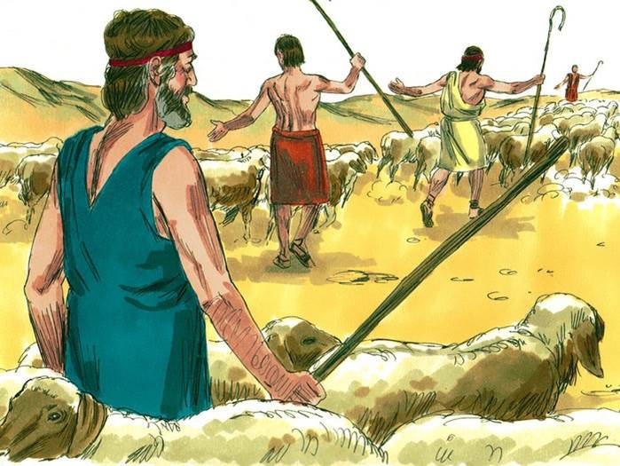
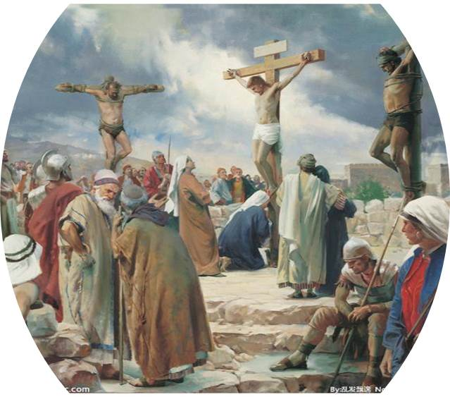

認識上帝慈愛的屬性
經文：出埃及記卅四章6～7節 & 路加福音廿三章32～47節
出埃及記卅四章
| 34:1 |
上主對摩西說：「你要鑿取兩塊石版，像從前那兩塊；我要把你摔碎的那兩塊石版上的話重新寫在這兩塊版上。
|
| 34:2 |
明天早晨，你要準備好，上西奈山，在山頂上見我。
|
| 34:3 |
任何人都不准跟你上來；整座山不可有人，也不可有牛羊在山下吃草。」
|
| 34:4 |
於是摩西鑿取兩塊石版，第二天一早，他照上主的吩咐把石版拿上山去。
|
| 34:5 |
上主在雲中降臨，與摩西站在那裡，宣告他自己的聖名。
|
| 34:6 |
耶和華<03068> 在他面前宣告 說：「耶和華<03068> ，耶和華<03068> ，是有憐憫、有恩典的 神<0410> ，不輕易發怒，並有豐盛的慈愛 <02617> 和誠實，
|
| 34:7 |
為千萬人存留慈愛 <02617> ，赦免罪孽 、過犯，和罪惡，萬不以有罪的為無罪，必追討他的罪，自父及子， 直到三、四代。」
|
備註: 「宣告」：「大聲朗讀」，由原文結構中看出應該是上帝自己宣告，上帝回答在33章13節摩西的禱告
出埃及記卅四章6節另譯
|
呂振中譯本
|
永恆主在他面前經過，宣告說：『永恆主耶和華，有憐憫有恩惠的上帝，不輕易發怒，而有豐盛的堅愛和忠信，
|
|
原文直譯
|
雅威在他面前經過，宣告：「雅威，雅威，有憐憫有恩典的上帝，不輕易發怒，並有豐盛的慈愛和誠實，
|
尋求主的見證
- 前些日子我在禱告的時候，我對神說我渴慕能夠更認識你
- 上帝讓我在讀聖經的時候，一些經文對我發出亮光
- 我這樣禱告，一方面我在思想門徒訓練在教會的意義，一方面我要如何能夠讓每一個信靠耶穌基督的門徒能夠更認識神
- 上帝讓我看見
- 上帝守約的慈愛（Chesed)與認識神的關係
何西阿書
| 6:1 |
來吧，我們歸向耶和華！他撕裂我們，也必醫治；他打傷我們，也必纏裹。
|
| 6:2 |
過兩天他必使我們甦醒，第三天他必使我們興起，我們就在他面前得以存活。
|
| 6:3 |
我們務要認識<03045>耶和華，竭力追求認識<03045>他。他出現確如晨光；他必臨到我們像甘雨，像滋潤田地的春雨。
|
| 6:4 |
主說：以法蓮哪，我可向你怎樣行呢？猶大啊，我可向你怎樣做呢？因為你們的良善<02617>如同早晨的雲霧，又如速散的甘露。
|
| 6:5 |
因此，我藉先知砍伐他們，以我口中的話殺戮他們；我施行的審判如光發出。
|
| 6:6 |
我喜愛良善<02617> （或譯：憐恤），不喜愛祭祀；喜愛認識 神，勝於燔祭。
|
| 6:7 |
他們卻如亞當「背約」，在境內向我行事詭詐。
|
雅各可能在庇耳拉海萊出生
- 以撒和利百加結婚20年後生下了孿生兄弟以掃和雅各，那時以撒已經60歲（創世記》25:26）
- 利百加懷孕的時候，孩子們在她裡面彼此相爭，她就去求問耶和華。（《創世紀》25:22）。
- 耶和華對她說：「兩國在你腹中，兩族要從你身內分出。這族必強於那族，將來大的要服事小的。」
- 長子以掃更得父親以撒的歡心，因為常吃他的野味；次子雅各為人安靜，常在帳棚里，更受母親利百加的偏愛。
長子名分祝福
- 以掃長大後成了獵人，一天他打獵回來，累昏了。向雅各要紅豆湯喝。雅各要以掃把長子的名分賣給他；以掃說，我現在快死了，這長子的名分對我有什麼用？於是起誓，把長子的名分賣給雅各。以掃就這樣輕看了他長子的名分。
- 長子名分包括：在家中尊榮和權力居首（《創世記49:3），得雙份的產業（《申命記》21:17），分別為聖歸給上帝（《民數記》8:17-19）。
- 以撒年老，眼睛昏花，不能看見，叫以掃往田野去打些野味來，照我所愛的作成美味給他吃，使我在未死之前給以掃祝福。利百加聽見，讓雅各偽裝成以掃，拿兩隻山羊羔作成美味給以撒吃，搶得父親的祝福。又用山羊羔皮，包在手上、和頸項的光滑處；以撒摸著他，說，聲音是雅各的聲音，手卻是以掃的手（以掃的身體強壯而多毛）。以撒就給雅各祝福；以掃回來，怨恨雅各，準備殺雅各。
在路司遇見天梯
創世記
|
28:16
|
雅各睡醒了，說：「耶和華真在這裡，我竟不知道<03045>！」
|
|
28:17
|
就懼怕，說：「這地方何等可畏！這不是別的，乃是 神的殿，也是天的門。」
|
|
28:18
|
雅各清早起來，把所枕的石頭立作柱子，澆油在上面。
|
|
28:19
|
他就給那地方起名叫伯特利（就是 神殿的意思）；但那地方起先名叫路斯。
|
|
28:20
|
雅各許願說：「 神若與我同在，在我所行的路上保佑我，又給我食物吃，衣服穿，
|
|
28:21
|
使我平平安安地回到我父親的家，我就必以耶和華為我的 神。
|
|
28:22
|
我所立為柱子的石頭也必作 神的殿；凡你所賜給我的，我必將十分之一獻給你。」
|

 

創世記卅二章
|
32:6
|
所打發的人回到雅各那裡，說：「我們到了你哥哥以掃那裡，他帶著四百人，正迎著你來。」
|
|
32:7
|
雅各就甚懼怕，而且愁煩，便把那與他同在的人口和羊群、牛群、駱駝分做兩隊，
|
|
32:8
|
說：「以掃若來擊殺這一隊，剩下的那一隊還可以逃避。」
|
|
32:9
|
雅各說：「耶和華─我祖亞伯拉罕的 神，我父親以撒的 神啊，你曾對我說：『回你本地本族去，我要厚待你。』
|
創世記卅二章10節
- 向僕人所施的一切
- 慈愛 <02617> 和誠實，
- 我一點也不配得<06994>(8804) ；
- 我先前只拿著我的杖過這約旦河，如今我卻成了兩隊了。
路得記三章10節（Act of hesed）
- 波阿斯說：「女兒啊，願你蒙耶和華賜福。你末後的恩<02617>比先前更大；因為少年人無論貧富，你都沒有跟從。
- 波阿斯說：「願上主賜福給你！從前你對婆婆忠誠<02617> ，現在你對已故丈夫的家族更忠誠。你大可以去找個年輕人，不管他有錢沒錢，你卻沒有這樣做
- 波阿斯說：『女子阿，願你蒙永恆主賜福；你末後所表現的恩情<02617>比先前的更堅固，因爲青年人無論貧富、你都沒有跟從。
- 他(指波阿斯)說：「我女兒啊，願妳蒙雅威賜福。妳末後所施的恩慈<02617>比先前的更大；
- 因為少年人或貧窮，或富有，妳都沒有跟從。
民數記十四章
- 17 現在求主大顯能力，照你所說過的話說：
- 18『耶和華不輕易發怒，並有豐盛的慈愛<02617> ，赦免罪孽和過犯；萬不以有罪的為無罪，必追討他的罪，自父及子，直到三、四代。』
- 19 求你照你的大慈愛<02617>赦免這百姓的罪孽，好像你從埃及到如今常赦免他們一樣。
- 不是因為他們配得，而是因為祢的應許：按照你所說過的話。
- 136:1 你們要稱謝耶和華，因他本為善；他的慈愛<02617>永遠長存。
路加福音23章
- 32 他們同時帶來兩個囚犯，要跟耶穌一起處死。
- 33 他們到一個地方，叫「髑髏岡」，在那裡把耶穌釘在十字架上，同時又釘了兩個囚犯，一個在他右邊，一個在他左邊。
- 34 耶穌說：「父親哪，赦免他們，因為他們不曉得自己在做什麼。」 他們抽籤分了耶穌的衣服。
- 35 民眾站著觀看，猶太的領袖卻嗤笑他，說：「他救了別人，要是他真的是上帝所揀選的基督，讓他救救自己吧！」
- 36 兵士也同樣譏笑他。他們上前，拿酸酒給他，
- 37 說：「你若是猶太人的王，救救你自己吧！」
- 23:38 在他上面有牌子寫著：「這是猶太人的王。」
- 39 兩個跟他同釘的囚犯，有一個開口侮辱他說：「你不是基督嗎？救救你自己，也救救我們吧！」
- 40 另外一個卻責備那囚犯說：「你同樣受刑，你就不怕上帝嗎？
- 41 我們受刑是活該，因為我們罪有應得；但是這人並沒有做過一件壞事。」
- 42 於是他對耶穌說：「耶穌啊，你作王臨到的時候，求你記得我！」
- 43 耶穌對他說：「我告訴你，今天你要跟我一起在樂園裡。」
-
44-45 約在中午的時候，日光消失了，黑暗籠罩大地，直到下午三點鐘；懸掛在聖殿裡的幔子裂成兩半。
- 46 耶穌大聲呼喊：「父親哪，我把自己的靈魂交在你手裡！」說了這話，他就斷了氣。
- 47 那軍官看見這事的經過，就頌讚上帝說：「這個人真的是義人！」
在這個故事的場景中，有哪些人物？

他們對耶穌的態度個別是什麼？
民眾?
猶太領袖?
耶穌?
同釘十字架的兩個囚犯?
羅馬兵丁?
羅馬百夫長?
這些人對耶穌的認識？
- 耶穌：為釘祂的人代求
- 一起釘十字架的兩個強盜、暴徒：
- 一個對耶穌說侮辱的話
- 一個求耶穌記念他（耶穌接納他嗎？）
- 猶太領袖：嗤笑耶穌，他救了別人，要是他真的是上帝所揀選的基督，讓他救救自己吧！
- 羅馬兵丁：你若是猶太人的王，救救你自己吧！
- 羅馬百夫長：說耶穌真是個義人
- 說一個你禱告經歷神的故事
- 說一個經歷過的困難
- 在耶穌被釘十字架的場景中選一個人物，說說你的感動
- 明白上帝的守約的愛，增進了你對上帝的哪方面的認識
- 明白上帝的守約的愛，會影響你如何禱告？
- 你預備禱告向誰說這個（路加福音廿三章32～47節）的故事？
2021年2月28日主日信息討論題目
分享一個從出埃及記卅四章6～7節耶和華上帝宣告自己的屬性中，上帝守約的「慈愛」（Chesed）你的感受。
請大家一起讀路加福音廿三章32～47節現代中文譯本2～3次。
並分享下面的題目：
- 經文中你喜歡（感動）那一個部份？
- 從故事的人物中（說/做/選擇），你了解到他們有什麼特點？
- 在耶穌被釘十字架的場景中選一個人物，說說你的感動？
- 明白上帝的守約的愛，增進了你對上帝的哪方面的認識
- 明白上帝的守約的愛，會影響你如何禱告？
- 你預備禱告向誰說這個（路加福音廿三章32～47節）的故事？